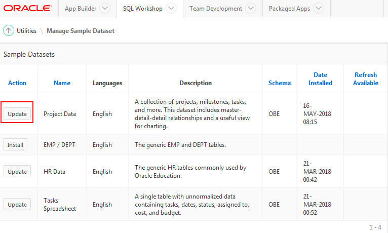

Installing Sample Dataset in Oracle Application Express 18.1
Before You Begin
This 5 minute tutorial shows you how to install a sample
dataset in Oracle Application Express 18.1. This is the first
tutorial in the series Using the Create Application Wizard
in Oracle Application Express 18.1. Read the
tutorials in sequence:
Installing Sample Dataset in Oracle Application Express 18.1
Oracle Application Express includes four sample datasets.
Each dataset includes sufficient data to enable you to build
applications with pages containing different types of
components.
With a few clicks of the mouse you can install, refresh,
replace, or remove sample datasets within one of the schemas
associated with your workspace. In this tutorial, you install
the sample dataset, Project Data.
What Do You Need?
Access to Oracle Application Express 18.1
Access Your Development Environment
How you sign in and access Oracle Application Express depends
upon where Oracle Application Express resides. Oracle
Application Express may reside in a local on-premises Oracle
Database or in a hosted environment, such as the Oracle Cloud.
The sign in credentials you use to sign in differ depending
upon the installation type.
Free Workspace: Give Oracle
Application Express a test run by signing up for a free
workspace. To request an evaluation workspace, go to apex.oracle.com and click Get
Started.
Oracle Cloud: Develop and deploy
applications without worrying about infrastructure, repair,
and downtime. Oracle Application Express is available
in Exadata Express Cloud Service and Database Cloud Service.
However, you need to manually customize your databases to
install and enable Oracle Application Express. To learn
more, see https://cloud.oracle.com/database
Oracle Application Express On-premises:
Install Oracle Application Express directly within any
Oracle Database and then sign in to your workspace using
your sign in credentials. For details on your sign in
credentials, contact your administrator or see Oracle Application Express Installation
Overview
Oracle Application Express
Pre-Built VM: Install Oracle VM VirtualManager
and import the pre-built VM in it. For details, see Oracle Application Express Pre-Built VM
Install
Sample Dataset
To install the sample dataset:
In the Oracle Application Express Workspace home page,
click SQL Workshop.
Select Utilities and click Sample Datasets.
On the Sample Datasets page, find the dataset Project
Data and click Install. If the sample dataset is
already installed, then click Update.
Click Install Dataset. The Load Sample Dataset -
Results page appears. At this point, you can create an
application or exit. Click Exit. The Sample Dataset
page displays again.  Description
of the illustration project_data_update.pngNote: The Action column now displays Update instead of
Install.
Tip: You can click Update to refresh a sample dataset or
remove it.
This completes the task of loading Project Data sample
dataset.

 Before You Begin
Before You Begin Install
Sample Dataset
Install
Sample Dataset